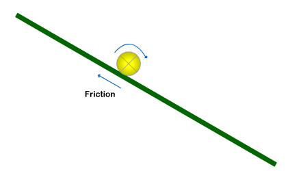

Friction
What is Friction? Friction is a force between a surface and an object moving on that surface that resists
motion. In other words, the force of friction acts in the direction that is opposite the direction the object is
moving on a surface. This idea is shown below:

Why do we care about friction? Friction is another very important force that allows you to walk, ride your bike, or drive to where you want to go. Without friction, we'd slide off of our chairs and slip trying to walk! Life would be even more difficult!
Example 1. For example, when you walk barefoot, you may feel the friction
between the bottom of your foot and the ground surface. When you first take a step and push forward on the ground
(See #1 in the picture below), this friction force acts on your foot in the opposite direction you are walking in. The amount of the force of friction
acting on your foot is
also the same as the force your foot applies to the ground. This
balance of forces keeps your foot from sliding forward on the ground. But if you stepped on a banana, the backward friction force
would be much less. As a result, your foot would slide forward, in the direction of the net force acting on your
foot (and you may fall!).

So, this shows how the friction
between the ground and the bottom of your foot is necessary to keep your foot from sliding forward when you take
a step. This happens because friction pushes against the bottom of your foot in the opposite direction that you are pushing against
the ground. The amount of the force of friction acting on your
foot
is also the
same as the force your foot applies to the ground.
As shown in #3, friction also
allows you to push off backward on the ground and allow you to move forward. Friction
acts in the opposite direction of your push on the ground, or forward this time. If there were less or no friction
(for example, if you stepped on another banana), your foot
would slide backwards and you may fall (again!).
Example 2. Another example of friction is pushing a box across a floor. You have probably noticed that it's much easier to push a box on a wooden floor than on a carpeted floor. This is because there is more friction that opposes the motion of the box on the carpeted floor than on the smoother wooden floor.

Example 3. For a round object to roll down an incline (such as a hill),
there must be at least some friction between the object and surface of the incline. If
there is no friction, the object will not roll. Instead, it will slide down the incline.
Effect of friction on sliding vs.
rolling objects.
The amount of friction between a round object (for example, a ball) and surface determines whether the object will
slide or roll on the surface (for example, a ramp).
If there is no or little friction, the
object will slide down the surface.
For sliding objects, greater friction produces more resistance to the object's motion.

If there is enough friction acting on the round object, it will
start to roll down the surface. This is what we see happen most of the time.
Once there is enough friction to keep the rolling object rolling
(and not slipping or sliding at all on the surface), increasing the friction does not affect the rolling object's motion. In other
words, once friction is greater than a certain amount, adding more friction does not affect the ball's motion.

Friction and speed of ball on ramp. As discussed more in Kinetic and Potential Energy (advanced section), there are several types of kinetic energy (KE). One type is translational KE, which is the energy due to the movement of the object across a distance (for example, a ball sliding down a ramp). The faster an object moves, the greater its translational KE is.
Another type of KE is rotational KE. This is the energy due to an object's rotation around an axis. The faster the object rotates, the greater its rotational KE is. Both types of motion are shown in the animation below:

The animation to the left shows a ball rolling
down a ramp. The ball has two types of motion: (a) translational motion (moving along the x-axis, and (b) rotational
motion (rotating along its own axis).
Advanced:
The acceleration of a solid sphere rolling down an incline without slipping. (This
section includes concepts related to rotational motion that are probably not familiar to students.)
The animation to the left shows a ball
rolling down a ramp. The ball has two types of motion: (a) translational motion (moving along the x-axis, and
(b) rotational motion (rotating along its own axis).
Applying
Newton's Second Law in x-direction (down the ramp):
m
• ax
= m • g • sinΘ
- fs
(#1)
Plan for solving
for ax: We want to reduce the number of unknowns in this equation by replacing
fs
with other terms in the equation (like acceleration and mass). To do that, we will use something
called the torque (pronounced "tork"). Torque is a twisting force that causes objects to spin/rotate/roll. We will use this relationship for the torque on the ball.
Sum of Torque on object
=
I
• α =
fs
• r (#2)
(because the only torque acting on the ball is due to friction)
This is analogous to Newton's second law: The Sum of Forces on object = m • a; The Sum of Torque on an object = I • α, where:
- I is the resistance of an object to change in rotational motion (analogous to m, or mass, which is resistance to change in translational motion)
- α is the rotational acceleration of an object (analogous to a, which is the translational acceleration of an object)
For
a solid sphere:
I = 2/5 m • r2 (#3) (r:
radius of sphere)
α = ax
/r (#4)
Solving for fs
(in #2):
fs
= I
• α/r
Substituting for I (#3) & α
(#4):
fs
= (2/5
m • r2)(ax/r)/r
fs= 2/5
m • ax
(#5)
Substituting
fs
from (#4) into our original equation (#1):
m • ax =
m • g • sinΘ
- 2/5 m • ax
The m's (mass) cancel each other, and we have:
ax = g • sinΘ - 2/5 ax
Adding 2/5 ax
to both sides of the equation:
7/5 ax = g • sinΘ
And Finally!!...
ax = 5/7 g • sinΘ ==> This
is the acceleration of a solid sphere rolling without slipping down a ramp.
If there were no friction on this ramp, then from (#1):
ax = g • sinΘ or ax = 7/7 g • sinΘ
ax = g • sinΘ or ax = 7/7 g • sinΘ
So,
we see that the acceleration of the ball down the ramp, ax,
is less when the ball is rolling due to friction on the ramp surface compared to when it slides down the
ramp with no friction.